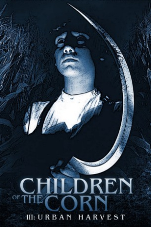

Country:United States, 90 minutes
Spoken languages:English
Genres:Horror, Thriller
Director(s):James D.R. Hickox
Writer(s):Dode B. Levenson
Video Codec:Unknown
Number: 2711


Certification:R
Storyline:
After a couple adopts a pair of orphaned brothers, it becomes alarmingly clear the boys are much more than they seem.
Cast:

Medium: Original DVD,
Comments: Part of: Children of the Corn - 6-movie Collection
Loaned: No
Aspect ratio: Unknown